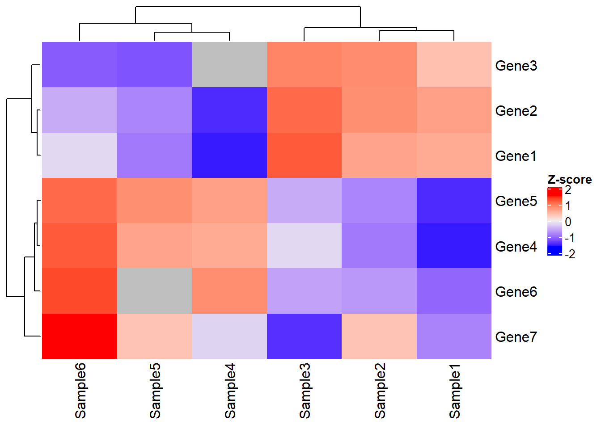

The Principle of R Package GSClassifier
2022-09-14
Chapter 1 The Principle of GSClassifier
1.1 Introduction
GSClassifier is an R package for modeling and identification of gene expression profiles (GEPs) subtypes. The detail of usage had been demonstrated in Github WiKi. Here, we propose to introduce the principle of GSClassifier, including flowchart, top scoring pairs (TSP) algorithm, and batch effect control.
1.2 Flowchart
The flowchart of GSClassifier is showed in Figure 1.1.
1.2.1 Data Processing
A subtype vector should be confirmed before model training because it would be an input in supervised learning. There is no standard method to figure out the subtype vector data, which depends on the GEPs used and the related biological problems.
For PAD subtypes, the GEPs (PIAM and PIDG) are biologically associated and suitable for calling 4 sutbypes (PIAMhighPIDGhigh, PIAMhighPIDGlow, PIAMlowPIDGhigh, and PIAMlowPIDGlow).
1.2.2 Model Establishment and Validation
How to training
1.2.3 Model Application
How to use

Figure 1.1: The flow chart of GSClassifier
1.3 Data Processing
For each dataset, the RNA expression matrix would be normalized (we called Raw Matrix in the flowchart) internally so that the expression data of the samples in the dataset were comparable.
Next, the subtypes of the samples in each dataset would be called based on cluster analysis. Specially, we figured out PAD subtypes, which belong to Subtype Vector in the flowchart, via hierarchical clustering analysis.
1.4 Simulated Dataset
First, load needed packages:
# Install "devtools" package
if (!requireNamespace("devtools", quietly = TRUE))
install.packages("devtools")
# Install dependencies
if (!requireNamespace("luckyBase", quietly = TRUE))
devtools::install_github("huangwb8/luckyBase")
# Install the "GSClassifier" package
if (!requireNamespace("GSClassifier", quietly = TRUE))
devtools::install_github("huangwb8/GSClassifier")
# Install the "pacman" package
if (!requireNamespace("pacman", quietly = TRUE)){
install.packages("pacman")
library(pacman)
} else {
library(pacman)
}
# Load needed packages
packages_needed <- c(
"readxl",
"ComplexHeatmap",
"GSClassifier",
"rpart",
"tidyr")
for(i in packages_needed){p_load(char=i)}We simulated a dataset:
# Geneset
geneSet <- list(
Set1 = paste('Gene',1:3,sep = ''),
Set2 = paste('Gene',4:6,sep = '')
)
# RNA expression
x <- read_xlsx('./data/simulated-data.xlsx', sheet = 'RNA')
expr0 <- as.matrix(x[,-1])
rownames(expr0) <- as.character(as.matrix(x[,1])); rm(x)
# Subtype information
# It depends on the application scenarios of GEPs
subtype_vector <- c(1, 1, 1, 2, 2, 2)
# Binned data for subtype 1
Ybin <- ifelse(subtype_vector == 1, 1, 0)
# Parameters
breakVec = c(0, 0.25, 0.5, 0.75, 1.0)
# Report
cat(c('\n', 'Gene sets:', '\n'))
print(geneSet)
cat('RNA expression:', '\n')
print(expr0)
#
# Gene sets:
# $Set1
# [1] "Gene1" "Gene2" "Gene3"
#
# $Set2
# [1] "Gene4" "Gene5" "Gene6"
#
# RNA expression:
# Sample1 Sample2 Sample3 Sample4 Sample5 Sample6
# Gene1 0.51 0.52 0.60 0.21 0.30 0.40
# Gene2 0.52 0.54 0.58 0.22 0.31 0.35
# Gene3 0.53 0.60 0.61 NA 0.29 0.30
# Gene4 0.21 0.30 0.40 0.51 0.52 0.60
# Gene5 0.22 0.31 0.35 0.52 0.54 0.58
# Gene6 0.23 0.29 0.30 0.53 NA 0.61
# Gene7 0.10 0.12 0.09 0.11 0.12 0.14Look at the matrix via heatmap:
Heatmap(t(scale(t(expr0))), name = "Z-score")
This is an intersting dataset with features as following:
Distinguished gene sets: The expression profile between Gene 1-3 and Gene 4-6 is obviously different arross samples. Thus, these gene sets might represent different biology meaning.
Stable gene: The expression level and rank of Gene 7 seemed to be similar across samples. Thus, Gene 7 might not be a robust marker for subtype modeling. Thus, it could help us to understand how filtering of GSClassifier works.
Expression heterogeneity & rank homogeneity: Take Sample1 and Sample3 as examples. The expression of Gene 1-6 in Sample3 seemed to be higher than those of Sample1. However, the expression of Gene 1-3 is higher than Gene 4-6 in both Sample1 and Sample3, indicating similar bioprocess in these samples exists so that they should be classified as the same subtype.
1.5 Missing values
Here, we fill missing value with Recursive Partitioning and Regression Trees (RPART) algorithm:
# RPART
expr <- GSClassifier:::na_fill(expr0, method="anova", na.action = na.rpart)
# Report
cat('RNA expression:', '\n')
print(expr0)
cat('\n')
cat('RNA expression without NA value:', '\n')
print(expr)
# RNA expression:
# Sample1 Sample2 Sample3 Sample4 Sample5 Sample6
# Gene1 0.51 0.52 0.60 0.21 0.30 0.40
# Gene2 0.52 0.54 0.58 0.22 0.31 0.35
# Gene3 0.53 0.60 0.61 NA 0.29 0.30
# Gene4 0.21 0.30 0.40 0.51 0.52 0.60
# Gene5 0.22 0.31 0.35 0.52 0.54 0.58
# Gene6 0.23 0.29 0.30 0.53 NA 0.61
# Gene7 0.10 0.12 0.09 0.11 0.12 0.14
#
# RNA expression without NA value:
# Sample1 Sample2 Sample3 Sample4 Sample5 Sample6
# Gene1 0.51 0.52 0.60 0.210 0.300 0.40
# Gene2 0.52 0.54 0.58 0.220 0.310 0.35
# Gene3 0.53 0.60 0.61 0.466 0.290 0.30
# Gene4 0.21 0.30 0.40 0.510 0.520 0.60
# Gene5 0.22 0.31 0.35 0.520 0.540 0.58
# Gene6 0.23 0.29 0.30 0.530 0.392 0.61
# Gene7 0.10 0.12 0.09 0.110 0.120 0.14Look at the new matrix via heatmap, where the clustering result is not obviously disturbed by NA filling:
Heatmap(t(scale(t(expr))), name = "Z-score")
Although RPART algorithm is proved to be powerful dealing with NA value, we should try to use markers with less NA as possible. During PAD subtype establishment, only genes occurring in over 80% of datasets were retained so as to minumize the impact from mising value.
1.6 Top scoring pairs (TSP)
With subtype vectors and Raw Matrix, the TSP matrix for a specified subtypes could be calculated via function GSClassifier::trainDataProc:
trainDataProc(
Xmat, Yvec,
geneSet,
subtype = 1,
# 0.2 was Used in PAD project
ptail = 0.2,
# c(0, 0.25, 0.5, 0.75, 1.0) was Used in PAD project
breakVec = c(0, 0.25, 0.5, 0.75, 1.0)
)As show in Figure 1.2, The TSP matrix consists of 3 parts: binned expression, pair difference, and set difference. Next, we would use a simulated dataset to introduce how TSP matrix calculated in GSClassifier.

Figure 1.2: The components of TSP (2 gene sets)
1.6.1 Binned expression
First, we binned genes with diffrent quantile intervals so that the distribution of rank information could be more consistent across samples.
Take Sample4 as an example:
# Data of Sample4
x <- expr[,4]
# Create quantiles
brks <- quantile(as.numeric(x),
probs=breakVec,
na.rm = T)
# Get interval orders
xbin <- .bincode(x = x,
breaks = brks,
include.lowest = T)
xbin <- as.numeric(xbin)
names(xbin) <- names(x)
# Report
cat('Quantiles:', '\n'); print(brks)
cat('\n')
cat('Raw expression:', '\n');print(x)
cat('\n')
cat('Binned expression:', '\n'); print(xbin)
# Quantiles:
# 0% 25% 50% 75% 100%
# 0.110 0.215 0.466 0.515 0.530
#
# Raw expression:
# Gene1 Gene2 Gene3 Gene4 Gene5 Gene6 Gene7
# 0.210 0.220 0.466 0.510 0.520 0.530 0.110
#
# Binned expression:
# Gene1 Gene2 Gene3 Gene4 Gene5 Gene6 Gene7
# 1 2 2 3 4 4 1For example, 0.110 is the minimun of the raw expression vector, so its binned expression is 1. Similarly, the binned expression of maximum 0.530 is 4.
Generally, we calculate binned expression via function breakBin of GSClassifier:
expr_binned <- apply(
expr, 2,
GSClassifier:::breakBin,
breakVec)
rownames(expr_binned) <- rownames(expr)
print(expr_binned)
# Sample1 Sample2 Sample3 Sample4 Sample5 Sample6
# Gene1 3 3 4 1 2 2
# Gene2 4 4 3 2 2 2
# Gene3 4 4 4 2 1 1
# Gene4 1 2 2 3 4 4
# Gene5 2 2 2 4 4 3
# Gene6 2 1 1 4 3 4
# Gene7 1 1 1 1 1 1In this simulated dataset, Gene7 is a gene whose expression is always the lowest across all samples. In other words, the rank of Gene7 is stable or invariable across samples so that it’s not robust for identification of differentail subtypes.
Except binned expression, we also calculated pair difference later. Due to the number of gene pair is \(C_{2 \atop n}\), the removement of genes like Gene7 before modeling could really reduce the complexibility and save computing resources. In all, genes with low rank difference should be dropped out in some extent in GSClassifier.
First, We use base::rank to return the sample ranks of the values in a vector:
expr_binned_rank <- apply(
expr_binned, 2,
function(x)rank(x, na.last = TRUE)
)
print(expr_binned_rank)
# Sample1 Sample2 Sample3 Sample4 Sample5 Sample6
# Gene1 5.0 5.0 6.5 1.5 3.5 3.5
# Gene2 6.5 6.5 5.0 3.5 3.5 3.5
# Gene3 6.5 6.5 6.5 3.5 1.5 1.5
# Gene4 1.5 3.5 3.5 5.0 6.5 6.5
# Gene5 3.5 3.5 3.5 6.5 6.5 5.0
# Gene6 3.5 1.5 1.5 6.5 5.0 6.5
# Gene7 1.5 1.5 1.5 1.5 1.5 1.5Then, get weighted average rank difference of each gene based on specified subtype distribution (Ybin):
testRes <- sapply(
1:nrow(expr_binned_rank),
function(gi){
# Rank vector of each gene
rankg = expr_binned_rank[gi,];
# Weighted average rank difference of a gene for specified subtype
# Here is subtype 1 vs. others
(sum(rankg[Ybin == 0], na.rm = T) / sum(Ybin == 0, na.rm = T)) -
(sum(rankg[Ybin == 1], na.rm = T) / sum(Ybin == 1, na.rm = T))
}
)
names(testRes) <- rownames(expr_binned_rank)
print(testRes)
# Gene1 Gene2 Gene3 Gene4 Gene5 Gene6 Gene7
# -2.666667 -2.500000 -4.333333 3.166667 2.500000 3.833333 0.000000Gene7 is the one with the lowest absolute value (0) of rank diffrence. By the way, Gene 1-3 have the same direction (<0), so do Gene 4-6 (>0), which indicates the nature of clustering based on these two gene sets.
In practice, we use ptail to select differential genes based on rank diffrences. Smaller ptail is, less gene kept. Here, we just set ptail=0.4:
# ptail is a numeber ranging (0,0.5].
ptail = 0.4
# Index of target genes with big rank differences
idx <- which((testRes < quantile(testRes, ptail, na.rm = T)) |
(testRes > quantile(testRes, 1.0-ptail, na.rm = T)))
# Target genes
gene_bigRank <- names(testRes)[idx]
# Report
cat('Index of target genes: ','\n');print(idx); cat('\n')
cat('Target genes:','\n');print(gene_bigRank)
# Index of target genes:
# Gene1 Gene2 Gene3 Gene4 Gene5 Gene6
# 1 2 3 4 5 6
#
# Target genes:
# [1] "Gene1" "Gene2" "Gene3" "Gene4" "Gene5" "Gene6"Hence, Gene7 was filtered and excluded in the following analysis. By the way, both ptail and breakVec are hyperparameters in GSClassifier modeling.
1.6.2 Pair difference
In GSClassifier, we use a ensemble function featureSelection to select data for pair difference scoring.
expr_feat <- featureSelection(expr, Ybin,
testRes = testRes,
ptail = 0.4)
expr_sub <- expr_feat$Xsub
gene_bigRank <- expr_feat$Genes
# Report
cat('Raw xpression without NA:', '\n')
print(expr_sub)
cat('\n')
cat('Genes with large rank diff:', '\n')
print(gene_bigRank)
# Raw xpression without NA:
# Sample1 Sample2 Sample3 Sample4 Sample5 Sample6
# Gene1 0.51 0.52 0.60 0.210 0.300 0.40
# Gene2 0.52 0.54 0.58 0.220 0.310 0.35
# Gene3 0.53 0.60 0.61 0.466 0.290 0.30
# Gene4 0.21 0.30 0.40 0.510 0.520 0.60
# Gene5 0.22 0.31 0.35 0.520 0.540 0.58
# Gene6 0.23 0.29 0.30 0.530 0.392 0.61
#
# Genes with large rank diff:
# [1] "Gene1" "Gene2" "Gene3" "Gene4" "Gene5" "Gene6"In GSClassifier, we use function makeGenePairs to calculate s
gene_bigRank_pairs <- GSClassifier:::makeGenePairs(
gene_bigRank,
expr[gene_bigRank,])
print(gene_bigRank_pairs)
# Sample1 Sample2 Sample3 Sample4 Sample5 Sample6
# Gene1:Gene2 0 0 1 0 0 1
# Gene1:Gene3 0 0 0 0 1 1
# Gene1:Gene4 1 1 1 0 0 0
# Gene1:Gene5 1 1 1 0 0 0
# Gene1:Gene6 1 1 1 0 0 0
# Gene2:Gene3 0 0 0 0 1 1
# Gene2:Gene4 1 1 1 0 0 0
# Gene2:Gene5 1 1 1 0 0 0
# Gene2:Gene6 1 1 1 0 0 0
# Gene3:Gene4 1 1 1 0 0 0
# Gene3:Gene5 1 1 1 0 0 0
# Gene3:Gene6 1 1 1 0 0 0
# Gene4:Gene5 0 0 1 0 0 1
# Gene4:Gene6 0 1 1 0 1 0
# Gene5:Gene6 0 1 1 0 1 0Take Gene1:Gene4 of Sample1 as an example. \(Expression_{Gene1} - Expression_{Gene4} = 0.51-0.21 = 0.3 > 0\), so the pair score is 1. If the difference is less than or equal to 0, the pair score is 0. In addition, the difference of gene pair scoring between Sample 1-3 and Sample 4-6 is obivous, revealing the robustness of pair difference for subtype identification.
1.6.3 Set difference
In GSClassifier, Set difference is defined as a weight average of gene-geneset rank difference.
# No. of gene sets
nGS = 2
# Name of gene set comparision, which is like s1s2, s1s3 and so on.
featureNames <- 's1s2'
# Gene set difference across samples
resultList <- list()
for (i in 1:ncol(expr_sub)) { # i=1
res0 <- numeric(length=length(featureNames))
idx <- 1
for (j1 in 1:(nGS-1)) { # j1=1
for (j2 in (j1+1):nGS) { # j2=2
# If j1=1 and j2=2, gene sets s1/s2 would be selected
# Genes of different gene sets
set1 <- geneSet[[j1]] # "Gene1" "Gene2" "Gene3"
set2 <- geneSet[[j2]] # "Gene4" "Gene5" "Gene6"
# RNA expression of Genes by different gene sets
vals1 <- expr_sub[rownames(expr_sub) %in% set1,i]
# Gene1 Gene2 Gene3
# 0.51 0.52 0.53
vals2 <- expr_sub[rownames(expr_sub) %in% set2,i]
# Gene4 Gene5 Gene6
# 0.21 0.22 0.23
# Differences between one gene and gene sets
# Compare expression of each gene in Set1 with all genes in Set2.
# For example, 0.51>0.21/0.22/0.23, so the value of Gene1:s2 is 3.
res1 <- sapply(vals1, function(v1) sum(v1 > vals2, na.rm=T))
# Gene1:s2 Gene2:s2 Gene3:s2
# 3 3 3
# Weight average of gene-geneset rank difference
res0[idx] <- sum(res1, na.rm = T) / (length(vals1) * length(vals2))
# Next gene set pair
idx <- idx + 1
}
}
resultList[[i]] <- as.numeric(res0)
}
resMat <- do.call(cbind, resultList)
colnames(resMat) <- colnames(expr_sub)
rownames(resMat) <- featureNames
# Report
cat('Set difference across samples: ', '\n')
print(resMat)
# Set difference across samples:
# Sample1 Sample2 Sample3 Sample4 Sample5 Sample6
# s1s2 1 1 1 0 0 0In GSClassifier, we established makeSetData to evaluate set difference across samples:
# Gene set difference across samples
geneset_interaction <- GSClassifier:::makeSetData(expr_sub, geneSet)
# Report
cat('Set difference across samples: ', '\n')
print(resMat)
# Set difference across samples:
# Sample1 Sample2 Sample3 Sample4 Sample5 Sample6
# s1s2 1 1 1 0 0 0We have known that the subtype of Sample 1-3 differs from that of Sample 4-6, which revealed the robustness of set difference for subtype indentification.
As shown in Figure 1.2, TSP matrix here should be :
# TSP matrix
tsp <- rbind(
# Binned expression
expr_binned[gene_bigRank,],
# Pair difference
gene_bigRank_pairs,
# Set difference
resMat
)
# Report
cat('TSP matrix: ', '\n')
print(tsp)
# TSP matrix:
# Sample1 Sample2 Sample3 Sample4 Sample5 Sample6
# Gene1 3 3 4 1 2 2
# Gene2 4 4 3 2 2 2
# Gene3 4 4 4 2 1 1
# Gene4 1 2 2 3 4 4
# Gene5 2 2 2 4 4 3
# Gene6 2 1 1 4 3 4
# Gene1:Gene2 0 0 1 0 0 1
# Gene1:Gene3 0 0 0 0 1 1
# Gene1:Gene4 1 1 1 0 0 0
# Gene1:Gene5 1 1 1 0 0 0
# Gene1:Gene6 1 1 1 0 0 0
# Gene2:Gene3 0 0 0 0 1 1
# Gene2:Gene4 1 1 1 0 0 0
# Gene2:Gene5 1 1 1 0 0 0
# Gene2:Gene6 1 1 1 0 0 0
# Gene3:Gene4 1 1 1 0 0 0
# Gene3:Gene5 1 1 1 0 0 0
# Gene3:Gene6 1 1 1 0 0 0
# Gene4:Gene5 0 0 1 0 0 1
# Gene4:Gene6 0 1 1 0 1 0
# Gene5:Gene6 0 1 1 0 1 0
# s1s2 1 1 1 0 0 01.7 Discussion
1.7.1 Model complexibility
Linear growth/exponential growth
1.7.2 Missing value
Talk about strategy in subtypes modeling and calling